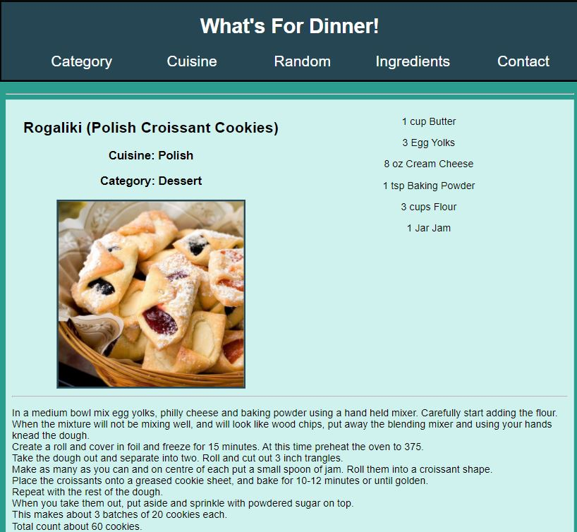
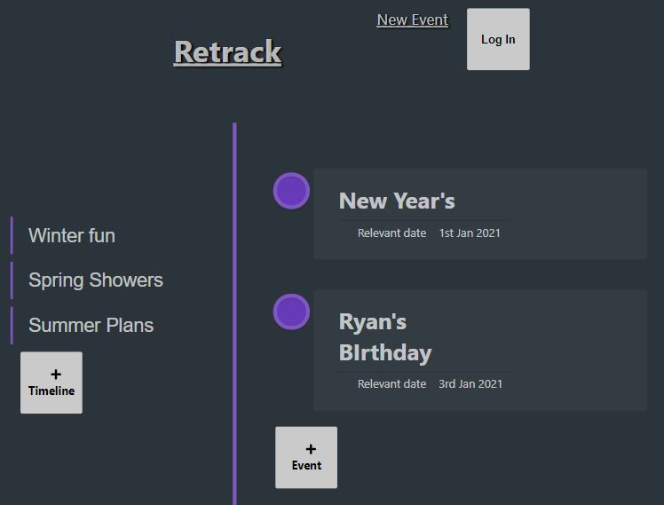
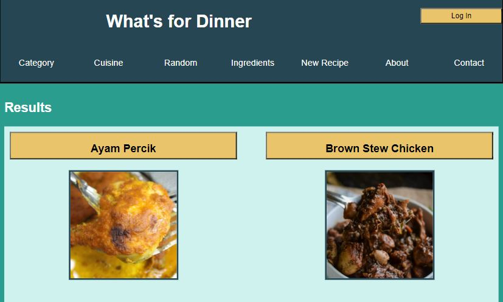

Intro
Who I am
I was a hobbyist game-developer and tester. During my years at Epic Systems, I enjoyed taking many online courses and even a few Computer Science classes at the University of Wisconsin just for fun!
Where am I
I am in Madison, WI. Previously, I grew up in Stevensville, MI and attended undergrad at the University of Michigan in Ann Arbor.
About Me
Passion
I have worked in software development for the past 6 years in Quality Assurance. Now, I would like to use my experience to make great software! Here are a few reasons why I would like to be a software developer:
- I enjoy solving problems.
- I love working with computers.
- Development teams are full of wonderful people, both technically and creatively!
Interests
- Ballroom Dancing - I danced competitively in college.
- Swing Dancing - Social dancing is a great way to relax!
- Video Games - My favorite media because it expresses in so many ways!
- Worldbuilding - Language, Magic, and endless possibilities!
Projects
What's for Dinner
Description: My first capstone using a third-party API. This app is for anyone hungry and curious! It finds recipes based off the category, cuisine, or list of ingredients. Still can't decide What's for Dinner? Try one of the ten random recipes!
Technology: HTML, CSS, Javascript with JQuery
Visit GitHubRetrack
Description: Retrack was initially designed for release date tracking. Anyone can post an event that they would like to track. Timelines are lists of events sorted by their date. With Retrack, I wanted to explore different styles and experiment with grids.
Technology: React, CSS, Express, Node, and PostgreSQL
Visit Client GitHub Server GitHubWhat's for Dinner (2.0)
Description: An upgrade of my first project. I converted the HTML to the React framework, added a login system, and everyone can now add their own custom recipes! This is a long-term project that I plan on continuing to upgrade in the future.
Technology: React, CSS, Express, Node, Auth0, and PostgreSQL
Visit Client GitHub Server GitHub